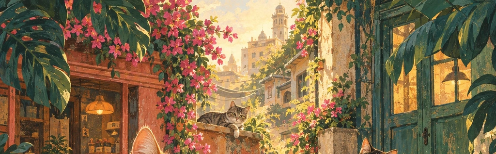
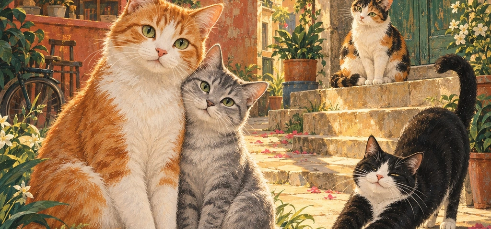
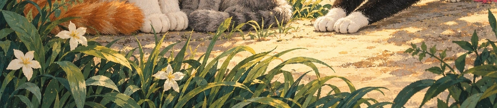
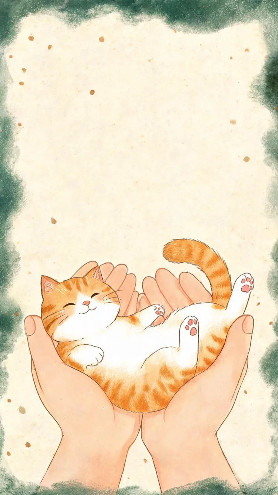

同创汇猫咪故事馆VOL.01 · 秋日来信 · 遇见纪念

我和 TA 的故事
第一次知道 TA，是在这里。今天，我记住了 TA。
momo
81天后拆迁
距离同创汇拆迁，还有
TA 们还不知道，家要没了。



拆迁之前，让它们先被看见。
遇见 · 记住 · 守护愿每一场相遇，都通向一个家
作者 @冰冰助

摸到谁，就读读谁的故事。
这里 16 位是等着安置的小猫，每一只都等概率出现。
底部「猫猫手册」里，还收着 101 份档案。
作者 @冰冰助

作者 @冰冰助
作者 @冰冰助
馆里记着 101 位。每一只都有名字。
带 的，是你已经摸过的。
点任意一只，读读 TA 的故事，也留下一句你和 TA 的故事。
它们还不知道，家要没了——但可以先被记住。
作者 @冰冰助
如果你也想为它们做点什么——
这里是找到我们的方式。
用领养终止流浪，
让每一次喜欢，都通向一个家。
「猫猫手册」里标着 还在等家 的小猫，都在等一位认真负责的家人。
领养前请想清楚：十几年的陪伴、生病的花费、搬家也不放弃。
同创汇拆迁在即，小猫们急需新的安置点。
如果你所在的 小区 / 园区 / 校园 有群护志愿者，愿意分流接收几只——
在这条小红书笔记的评论区留言，或直接私信笔记作者，每一条我们都会看到。
亲人的猫，尽量帮 TA 找到一个家；
不亲人的猫，就留一口饭、一片屋檐。
每一种温柔，都是对生命的尊重。
想领养、分流，或者只是想知道它们最近好不好——
加好友请备注「同创汇猫咪」，方便我第一时间通过。
看见，就是改变的开始。
作者 @冰冰助